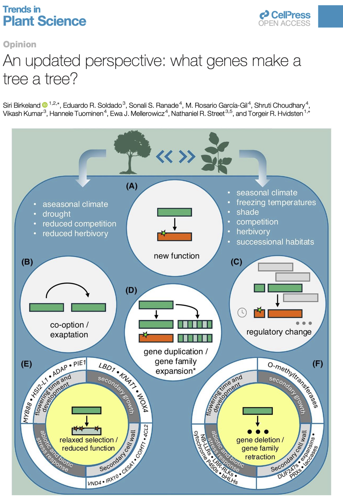
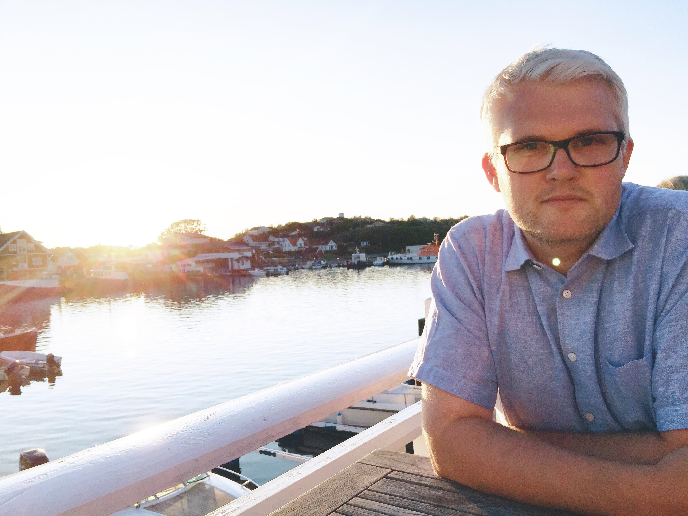
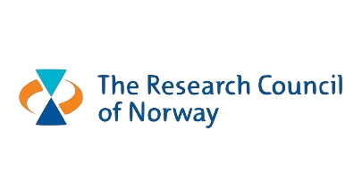

Plants & trees
Evolution of regulatory networks in trees
Modelling the regulatory networks that orchestrate wood formation in angiosperm and gymnosperm trees, and comparing them across species to understand tree evolution.
Learn more →We use advanced data analysis and large genomics datasets to model how genes interact in regulatory networks — and how such networks give rise to properties characteristic to individuals and species.


Professor and BIAS group leader · Norwegian University of Life Sciences
Integrating multi-omics data to infer and compare regulatory networks across species and systems.
Modelling the regulatory networks that orchestrate wood formation in angiosperm and gymnosperm trees, and comparing them across species to understand tree evolution.
Learn more →Network-based methods for unravelling the genetic interactions between hosts and their microbial communities — in fish, cattle and beyond.
Learn more →How gene regulation evolves after whole-genome duplication in salmonids, and whether duplications spark new regulatory innovations.
Learn more →Supported by
